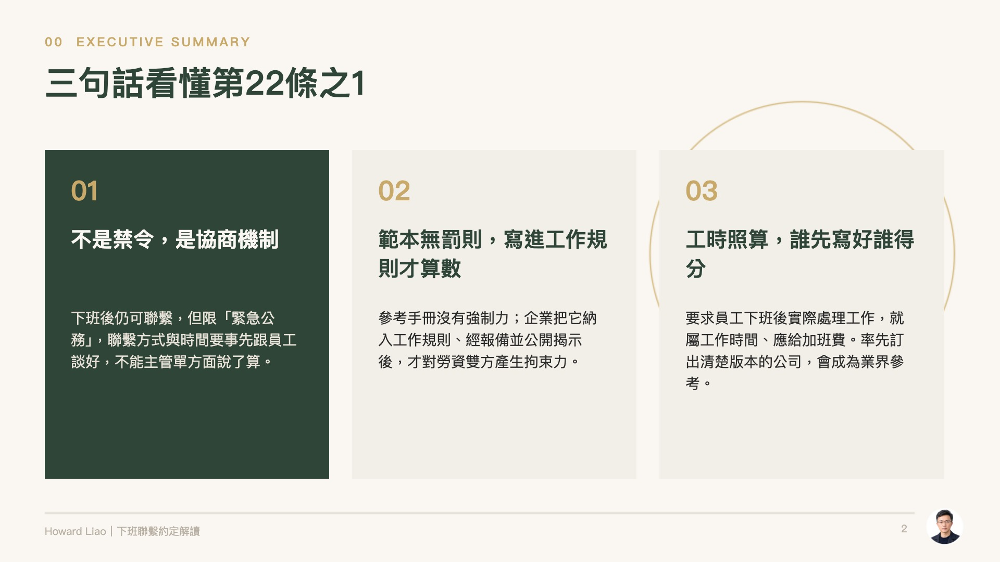
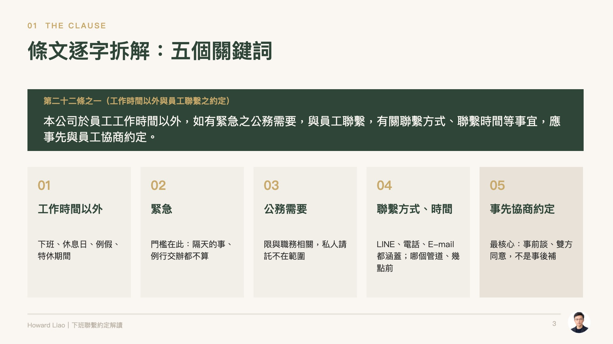
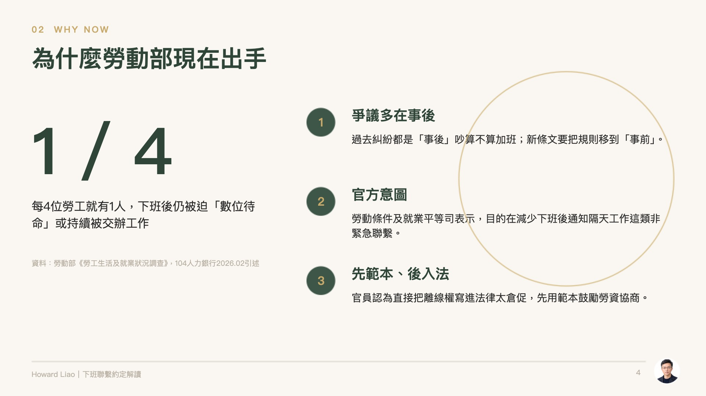
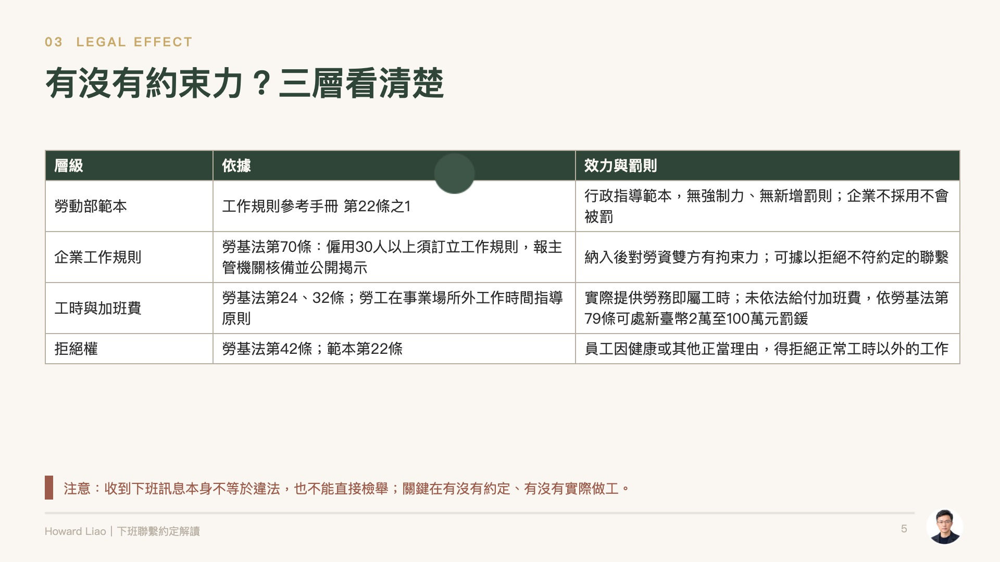
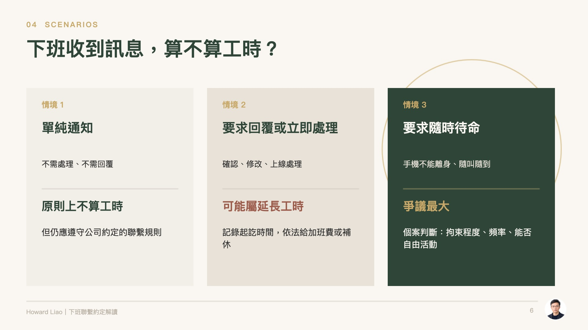
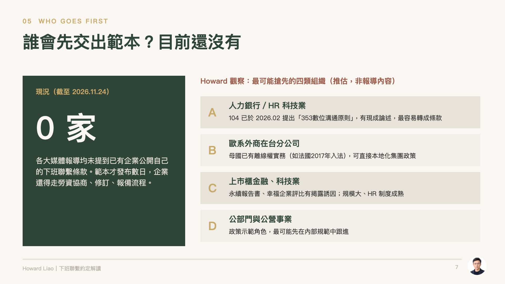
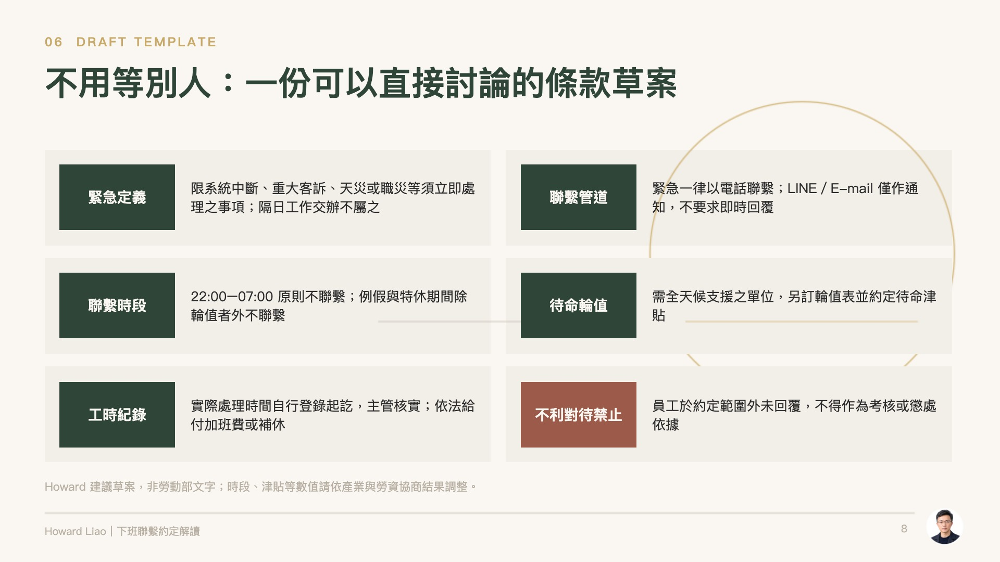
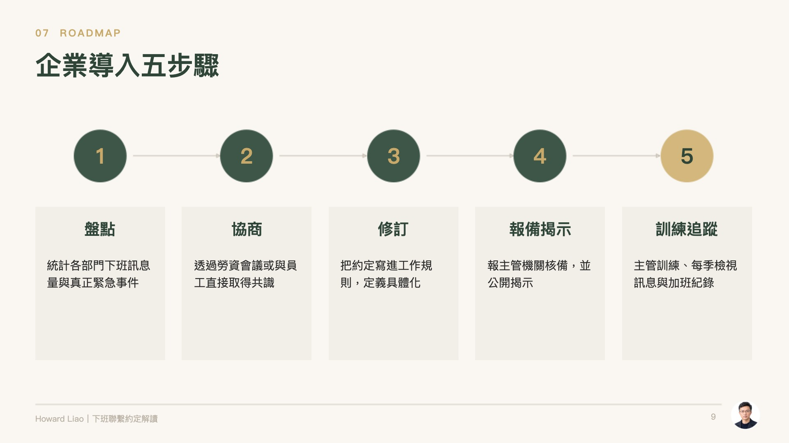
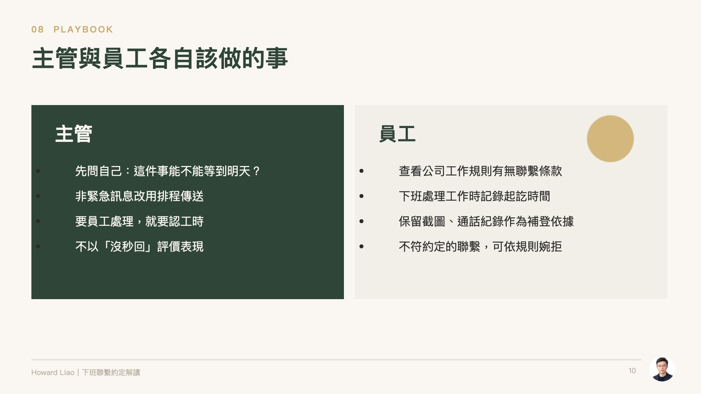
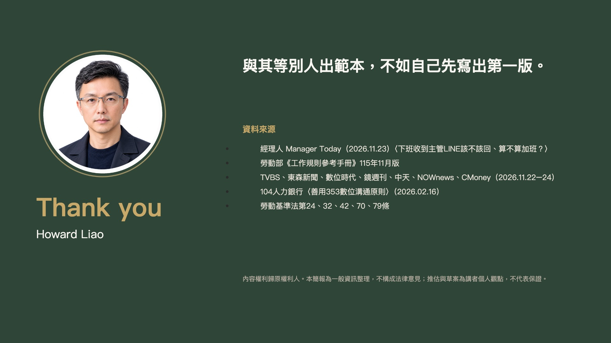

下班聯繫約定：誰會先交出「範本」給大家學？
Howard Liao Ph.D. ｜ 勞動部《工作規則參考手冊》新增第22條之1權威解讀
🔒 僅限在線預覽
◂ 回 Seminar 總目錄
研析背景：勞動部於 115 年 11 月最新修訂《工作規則參考手冊》，正式增訂第 22 條之 1「工作時間以外與員工聯繫之約定」，引發全國企業人資、法務與各級主管的高度關注與熱烈探討。

高管速覽核心：

法條原文：「本公司於員工工作時間以外，如有緊急之公務需要，與員工聯繫，有關聯繫方式、聯繫時間等事宜，應事先與員工協商約定。」

現實數據與政策脈絡：

法律責任層次對照：

三種常見通訊情境判定：

Howard 深度觀察（最可能搶先推出範本的四類組織）：

Howard 建議之企業落地 6 大條款設計：

標準落地流程：

日常行動準則：

總結展望：企業治理與數位人權的界線正在重構。能率先兼顧「營運應變韌性」與「員工休息離線權」的企業，才是具備真正成熟管理能力的現代化組織。